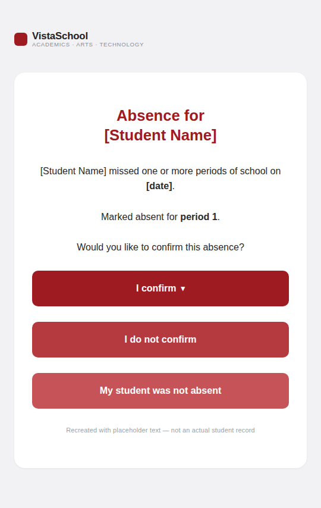
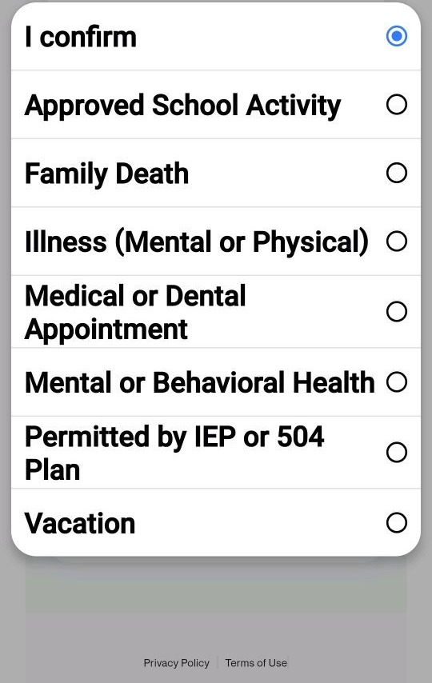
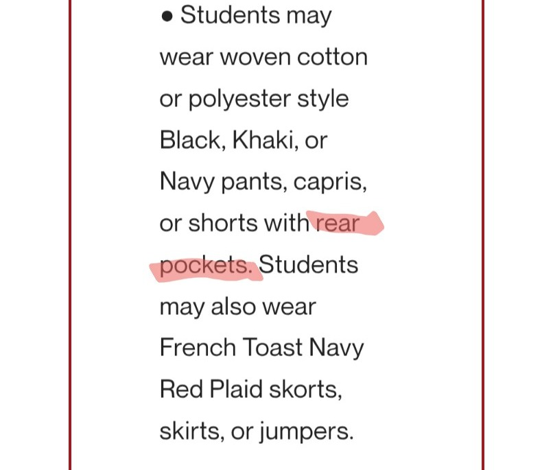

Un solo lugar, con función de búsqueda, para las políticas, los derechos de los padres, y los recursos de supervisión de escuelas autónomas que aplican a las familias de Vista — cada tarjeta enlaza directamente a la fuente oficial real.
Esto es un punto de partida y un recopilador de recursos, no es asesoría legal, y no es exhaustivo — las leyes, los reglamentos, y las políticas propias de Vista pueden cambiar. Cada tarjeta enlaza a la fuente primaria para que usted mismo pueda leer la versión completa y actual. Para cualquier asunto urgente o de alto riesgo, considere también contactar al Utah Parent Center (ayuda gratuita para familias) o a un abogado.
Recopilado en septiembre de 2026 a partir de fuentes públicas del estado y del autorizador de escuelas autónomas.
Mostrando 17 de 17 temas
Vista es una escuela autónoma pública, autorizada y supervisada por el estado — no por un distrito escolar local.
Las escuelas autónomas son gratuitas, están abiertas a cualquier residente de Utah, y tienen más independencia sobre el currículo y el personal que las escuelas de distrito típicas — pero siguen siendo públicas y no religiosas. La Junta Estatal de Escuelas Autónomas de Utah (SCSB) autoriza a Vista, revisando su desempeño cada año, con una revisión más profunda aproximadamente cada cinco años.
Fuente: Utah Charter Access Point — Preguntas Frecuentes →El acuerdo de autorización (charter agreement) real de Vista y su situación actual son públicos — léalos usted mismo.
Su historial de matrícula, los contactos de liderazgo, y su situación académica, financiera, y operativa están todos publicados en el panel del SCSB para Vista.
Vista School — panel oficial del SCSB →
Vista School — Acuerdo de Autorización (PDF) →
Vista actualmente "Cumple con las Expectativas" en lo académico, financiero, y operativo — consulte el panel en vivo, no esta página, para conocer la situación actual.
El SCSB califica a cada escuela autónoma en esos tres aspectos cada año, así que esto puede cambiar.
Fuente: panel del SCSB para Vista School →Intente primero con la escuela, luego con la Junta Directiva — un patrón de inquietudes serias puede activar una revisión formal del estado.
El SCSB espera que las familias planteen inquietudes primero a nivel escolar, y luego presenten una queja formal si eso no funciona (vea "Presentar una Queja Formal" más abajo). Las cartas documentadas a la Junta Directiva y a la Junta Estatal de Escuelas Autónomas ayudan a construir el historial que revisan los reguladores.
Un patrón de inquietudes serias avanza a una escuela a través de un Marco de Rendición de Cuentas de Escuelas Autónomas público: Aviso de Inquietud → Advertencia → Período de Prueba → Cierre — con el objetivo de regresar a la escuela a Buen Estatus en cada etapa antes de que escale más.
La junta estatal que supervisa a Vista realiza reuniones públicas a las que usted puede asistir o ver.
Vea quién forma parte de la junta, lea sus agendas de reuniones, o consulte las políticas que la rigen a ella misma.
Conozca a la Junta Estatal de Escuelas Autónomas →
Reuniones y Agendas de la Junta del SCSB →
Políticas y Procedimientos del SCSB →
Usted tiene el derecho formal de objetar un libro o una tarea específica que considere inapropiada.
La ley de Utah (SB 114) otorga a los padres el derecho a revisar los materiales de instrucción. Un proceso formal de revisión y reconsideración de materiales sensibles (Regla de la Junta R277-628, Código de Utah §53G-10-103) permite que cualquier padre plantee una inquietud específica y reciba una respuesta.
Fuente: USBE — Derechos de los Padres en la Educación →Usted puede excluir a su hijo(a) de una lección o actividad específica, sin penalización académica.
El Código de Utah §53G-10-205 cubre las actividades que entran en conflicto con las creencias religiosas o las convicciones personales de su familia. Comience con una solicitud por escrito al maestro o al director.
Fuente: USBE — Derechos de los Padres en la Educación →Usted tiene el derecho de ver y copiar el expediente escolar de su propio hijo(a) — simplemente pregunte en la oficina principal.
La ley federal (FERPA) y la ley de privacidad de datos estudiantiles de Utah (Código de Utah §53E-9) garantizan esto. La mayoría de las solicitudes se atienden rápida e informalmente.
Fuente: USBE — Derechos de los Padres en la Educación (FERPA / 53E-9) →Actas de la junta, presupuestos, correspondencia — cualquier persona puede solicitar estos documentos bajo la ley de expedientes públicos de Utah.
Identifique al oficial de expedientes y describa lo que desea con especificidad razonable.
Espere una respuesta dentro de 10 días hábiles (5 días si demuestra una causa justificada para un trámite acelerado). Si se deniega una solicitud, la escuela debe citar la disposición específica de la ley GRAMA en la que se basa.
¿No está de acuerdo con el IEP de su hijo(a)? Existe una escalera definida, desde hablar con el maestro hasta llegar a una audiencia legal.
Los niños con discapacidades tienen derecho a una Educación Pública Gratuita y Apropiada (FAPE) bajo la ley IDEA. El Utah Parent Center ofrece consultores gratuitos para padres en cualquier etapa.
Hable con el maestro, luego con el personal de educación especial → solicite una sesión gratuita e imparcial con un Facilitador de Resolución de Problemas → presente una Queja Estatal por escrito → solicite una Mediación voluntaria (vinculante, gratuita, ambas partes deben estar de acuerdo) → o solicite una Audiencia de Debido Proceso formal (un procedimiento legal con una decisión vinculante — se recomienda asistencia legal en esta etapa).
Para un plan 504 en lugar de un IEP, comience con el Coordinador de la Sección 504 de la escuela.
Luego solicite mediación o presente una queja formal si eso no resuelve el asunto. También puede presentar una queja ante la Oficina Federal de Derechos Civiles dentro de los 180 días posteriores al incidente.
Fuente: USBE — Derechos del Estudiante y la Familia →La discriminación y el acoso son ilegales en toda escuela pública de Utah, incluidas las escuelas autónomas.
El Título IX (sexo), el Título VI (raza, color, origen nacional), y la Sección 504 (discapacidad) aplican todos, y las represalias contra cualquiera que denuncie están prohibidas. También puede acudir directamente a la Oficina Federal de Derechos Civiles dentro de los 180 días.
Fuente: USBE — Derechos del Estudiante y la Familia →¿Cree que Vista violó una ley o regla estatal específica? Cualquier miembro del público puede presentar una queja formal.
La Regla de la Junta R277-123 le permite presentar una queja a través de la línea directa de educación pública de USBE — indique la ley o regla específica que cree que fue violada.
El Departamento de Auditoría Interna de USBE revisa las quejas dentro de aproximadamente 7 días hábiles, y típicamente las remite a la escuela, a un departamento relevante de USBE, o — para escuelas autónomas — al autorizador de la escuela autónoma. Las investigaciones generalmente toman hasta 45 días (14 días para quejas de discriminación), con actualizaciones de estatus al menos cada 30 días. Las represalias en su contra por presentar la queja están prohibidas.
Presente una queja — Línea Directa de Educación Pública de USBE →
Lea la regla — Regla de la Junta R277-123 →
Las escuelas deben tener una política de participación de los padres, y los padres pueden formar parte de comités asesores estatales.
La ley de Utah (Código de Utah §53E-2-303) lo exige — una manera de ayudar a moldear las políticas y reglas de educación más allá de su propia escuela.
Fuente: USBE — Derechos de los Padres en la Educación →La ley de Utah exige la asistencia y detalla los pasos para las ausencias excesivas.
La ley de Utah (§53G-6-202, §53G-6-203) cubre a los niños en edad escolar — útil de saber si surge un problema de asistencia.
Fuente: USBE — Derechos de los Padres en la Educación →

Vale la pena preguntar: la Ley de Protección de Datos Estudiantiles de Utah (Código de Utah §53E-9) indica a las escuelas que limiten los datos estudiantiles que recopilan a lo que realmente requiere un propósito declarado. La ley de inasistencia escolar de Utah solo requiere que una ausencia se marque como justificada o injustificada (§53G-6-202, §53G-6-203) — así que es una pregunta justa si pedir a los padres que elijan una categoría de salud específica, en lugar de simplemente "médica/justificada," recopila más detalle de salud del que ese propósito requiere.
Las reglas internas propias de Vista — código de vestimenta, política de dispositivos, disciplina — más allá de lo que exige la ley estatal.
Solo podemos enlazar lo que está publicado públicamente. Los paquetes de la Junta están en el Sitio Web de Avisos Públicos de Utah; cada versión del acuerdo de autorización de Vista está en el panel del SCSB mencionado arriba.
Vista School — Política de Laptops / Dispositivos Estudiantiles (PDF) →
Sitio Web de Avisos Públicos de Utah — busque las reuniones de la junta de Vista School →

La propia política de código de vestimenta de Vista (sección "Bottoms"), tal como se publicó a los padres — el resaltado fue agregado por un padre de familia para señalar el requisito de bolsillos traseros.
Cómo comunicarse directamente con Vista.
585 E Center St., Ivins, UT 84738 · (435) 673-4110 · Director: Justin Blasko (según el listado del panel del SCSB de Vista). Para los miembros de la junta directiva, contacte a la escuela directamente o consulte los paquetes de las reuniones de la junta.
Fuente: panel del SCSB para Vista School →